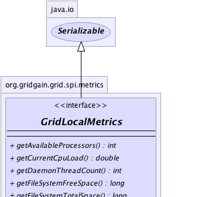
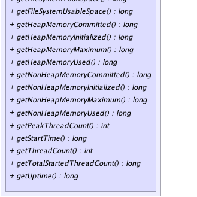

|
|

|

|
|

|

|

|
GridGain™ 3.6.0c
Community Edition |
|||||||||
| PREV CLASS NEXT CLASS | FRAMES NO FRAMES | |||||||||
| SUMMARY: NESTED | FIELD | CONSTR | METHOD | DETAIL: FIELD | CONSTR | METHOD | |||||||||
public interface GridLocalMetrics
This class represents runtime information available for current VM.
| Wiki | |
| Forum |
|  |
|  |
| Method Summary | |
|---|---|
int |
getAvailableProcessors()
Returns the number of processors available to the Java virtual machine. |
double |
getCurrentCpuLoad()
Returns the system load average for the last minute. |
int |
getDaemonThreadCount()
Returns the current number of live daemon threads. |
long |
getFileSystemFreeSpace()
Returns the number of unallocated bytes in the partition. |
long |
getFileSystemTotalSpace()
Returns size of the partition. |
long |
getFileSystemUsableSpace()
Returns the number of bytes available to this virtual machine on the partition. |
long |
getHeapMemoryCommitted()
Returns the amount of heap memory in bytes that is committed for the Java virtual machine to use. |
long |
getHeapMemoryInitialized()
Returns the amount of heap memory in bytes that the Java virtual machine initially requests from the operating system for memory management. |
long |
getHeapMemoryMaximum()
Returns the maximum amount of heap memory in bytes that can be used for memory management. |
long |
getHeapMemoryUsed()
Returns the current heap size that is used for object allocation. |
long |
getNonHeapMemoryCommitted()
Returns the amount of non-heap memory in bytes that is committed for the Java virtual machine to use. |
long |
getNonHeapMemoryInitialized()
Returns the amount of non-heap memory in bytes that the Java virtual machine initially requests from the operating system for memory management. |
long |
getNonHeapMemoryMaximum()
Returns the maximum amount of non-heap memory in bytes that can be used for memory management. |
long |
getNonHeapMemoryUsed()
Returns the current non-heap memory size that is used by Java VM. |
int |
getPeakThreadCount()
Returns the peak live thread count since the Java virtual machine started or peak was reset. |
long |
getStartTime()
Returns the start time of the Java virtual machine in milliseconds. |
int |
getThreadCount()
Returns the current number of live threads including both daemon and non-daemon threads. |
long |
getTotalStartedThreadCount()
Returns the total number of threads created and also started since the Java virtual machine started. |
long |
getUptime()
Returns the uptime of the Java virtual machine in milliseconds. |
| Method Detail |
|---|
int getAvailableProcessors()
Runtime.availableProcessors()
method.
This value may change during a particular invocation of the virtual machine.
double getCurrentCpuLoad()
If the load average is not available, a negative value is returned.
This method is designed to provide a hint about the system load and may be queried frequently. The load average may be unavailable on some platform where it is expensive to implement this method.
If you are running JDK 1.6 or above and
GridJdkLocalMetricsSpi.setPreferSigar(boolean)
is set to false (default is true), then this method is equivalent to
OperatingSystemMXBean.getSystemLoadAverage() method. Otherwise,
for JDK 1.5 Hyperic Sigar monitoring will be used.
Note that Hyperic Sigar is licensed under GPL. If this license is not
suitable for your business, remove hyperic libs from your classpath. In
case if this method will not detect JDK 1.6 and will not find Hyperic Sigar
libraries in the classpath, -1 will be returned.
long getHeapMemoryInitialized()
-1 if the initial memory size is undefined.
This value represents a setting of the heap memory for Java VM and is not a sum of all initial heap values for all memory pools.
-1 if undefined.long getHeapMemoryUsed()
used heap memory values of all heap memory pools.
The amount of used memory in the returned is the amount of memory occupied by both live objects and garbage objects that have not been collected, if any.
long getHeapMemoryCommitted()
committed heap memory values of all heap memory pools.
long getHeapMemoryMaximum()
-1
if the maximum memory size is undefined.
This amount of memory is not guaranteed to be available for memory management if it is greater than the amount of committed memory. The Java virtual machine may fail to allocate memory even if the amount of used memory does not exceed this maximum size.
This value represents a setting of the heap memory for Java VM and is not a sum of all initial heap values for all memory pools.
-1 if undefined.long getNonHeapMemoryInitialized()
-1 if the initial memory size is undefined.
This value represents a setting of non-heap memory for Java VM and is not a sum of all initial heap values for all memory pools.
-1 if undefined.long getNonHeapMemoryUsed()
used non-heap memory values of all non-heap memory pools.
long getNonHeapMemoryCommitted()
committed non-heap memory values of all non-heap memory pools.
long getNonHeapMemoryMaximum()
-1
if the maximum memory size is undefined.
This amount of memory is not guaranteed to be available for memory management if it is greater than the amount of committed memory. The Java virtual machine may fail to allocate memory even if the amount of used memory does not exceed this maximum size.
This value represents a setting of the non-heap memory for Java VM and is not a sum of all initial non-heap values for all memory pools.
-1 if undefined.long getUptime()
long getStartTime()
int getThreadCount()
int getPeakThreadCount()
long getTotalStartedThreadCount()
int getDaemonThreadCount()
long getFileSystemFreeSpace()
long getFileSystemTotalSpace()
long getFileSystemUsableSpace()
|
GridGain™ 3.6.0c
Community Edition |
|||||||||
| PREV CLASS NEXT CLASS | FRAMES NO FRAMES | |||||||||
| SUMMARY: NESTED | FIELD | CONSTR | METHOD | DETAIL: FIELD | CONSTR | METHOD | |||||||||
|
GridGain - Real Time Big Data
|
|
|
|